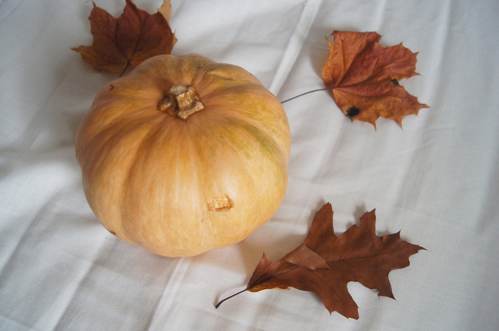

Недавно наступила настоящая золотая осень. В воздухе запахло дождем, опавшей листвой, немного похолодало. И вот, сегодня мы с мамой решили приготовить тыквенный суп. Вообще, я люблю готовить, для меня это такой процесс расслабления и релаксации, когда можно забыть обо всех проблемах.
